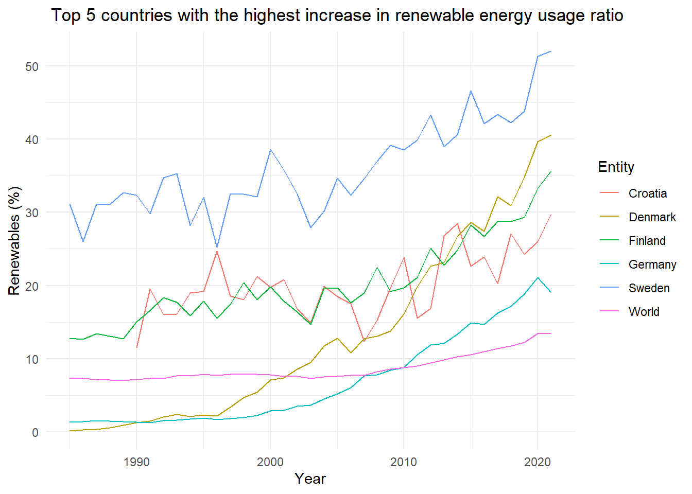

| Variable_Names | Description |
|---|---|
| Entity | The name of the country |
| Code | Country Name Abbreviation |
| Year | The year of the data |
| Renewables% | The percentage of renewable energy to all energy used |
| difference | The renewables% changes between 1985 and 2021. |
The growth rate of the proportion of renewable energy in total energy usage.
Background
In today’s world, we’re facing climate change and environmental issues. That’s why it’s important to look at how much renewable energy each country uses. Understanding this helps us make better plans to protect the environment. By analyzing the increase in the use of renewable energy in different countries, we can learn what works best and encourage countries with lower usage rates to improve.
Introduction
This part of report analyzes the recent trends in renewable energy’s share of primary energy consumption across various countries. Utilizing a dataset measuring the percentage of primary energy sourced from renewables, including hydropower, solar, wind, geothermal, bioenergy, wave, and tidal, and excluding traditional biofuels. The distribution of renewable energy use in various countries will be presented in this report. The five countries with the highest and lowest increases in the use of renewable energy will be presented in this report and used for GDP analysis at the end.
1. Research Question
Which five countries have made the greatest progress in the proportion of renewable energy, and roughly from which region do these countries come from?
2. Dataset Introduction
The dataset includes information on the share of primary energy consumption from renewable sources. The ratio of renewable energy use in countries around the world from 1965 to 2022 is recorded. This report will use data from 1985-2021. The average data for each continent and the world will be shaved off during the data cleaning process because it will not be used in this analysis.
Methodology
The methodology employed in this study aimed to analyze the growth of renewable energy usage rates in various countries between 1985 and 2021. The following steps were undertaken to accomplish this:
- Data Collection:
- Data on renewable energy usage rates for multiple countries from 1965 to 2022 were collected from Energy Institute.
- Data Processing and Analysis:
- The data collected in this research report were selected from the period 1985 to 2021.
- Because this study focuses on countries, the data of each continent and region will be deleted during the data clean process.
- Using the
ggplot2package in R, a line chart was generated to visualize the trends in renewable energy usage rates for the top five countries with the highest growth rates during the study period.
- Identification of Top Five Countries:
- Through data analysis, the top five countries with the highest growth rates in renewable energy usage between 1985 and 2021 were identified.
- The following table presents the filtered data.
| Entity | difference | Code | Year | Renewables (% equivalent primary energy) |
|---|---|---|---|---|
| Croatia | 18.21315 | HRV | 1991 | 19.53725 |
| Croatia | 18.21315 | HRV | 1992 | 15.99459 |
| Croatia | 18.21315 | HRV | 1995 | 19.16081 |
| Croatia | 18.21315 | HRV | 1996 | 24.70118 |
| Croatia | 18.21315 | HRV | 1993 | 16.08737 |
- Visualization:
- The line chart, depicted in Figure 1, illustrates the trends in renewable energy usage rates for these top five countries over the period from 1985 to 2021.

Result
In this report, we examined the evolution of renewable energy adoption across various entities from 1985 to 2021. The analysis primarily focused on identifying the top five entities with the highest increase in renewable energy consumption and world’s average over this period.
From Figure 1 above, we can observe that among the top five countries with the highest growth rates, Sweden has the highest utilization rate among all countries, having grown from approximately 30% to over 50%.
Germany started with a renewable energy usage rate of less than 10%, but after years of effort, it surpassed the world average from year 2010 , becoming the fifth-ranked country in terms of growth rate.
Denmark had almost zero renewable energy usage rate in 1985, but it grew by over 40% in just over 30 years.Finland and Croatia had a similar trend, with an increase of around 20% during this period.
From the table below, you can get a clear understanding of how much these countries and the world average have grown.
| Entity | difference |
|---|---|
| Denmark | 40.391086 |
| Finland | 22.919699 |
| Sweden | 20.884522 |
| Croatia | 18.213148 |
| Germany | 17.727043 |
| World | 6.140639 |
1. Conclusion
The top five countries in terms of growth in renewable energy usage rates are Denmark, Finland, Sweden, Croatia, and Germany. All of these countries are from Europe, indicating significant progress in renewable energy usage in Europe.
2. Recommendations
The world average growth rate of renewable energy usage is only 6%. We can examine the five countries with the lowest growth rates from Figure 2 to identify reasons, enabling a substantial increase in the world average in the future.
Reference
1.Wickham H, François R, Henry L, Müller K, Vaughan D (2023). dplyr: A Grammar of Data Manipulation. R package version 1.1.4, https://CRAN.R-project.org/package=dplyr.
2.Wickham H, Hester J, Bryan J (2024). readr: Read Rectangular Text Data. R package version 2.1.5, https://CRAN.R-project.org/package=readr.
3.H. Wickham. ggplot2: Elegant Graphics for Data Analysis. Springer-Verlag New York, 2016.
4.Wickham H, Vaughan D, Girlich M (2024). tidyr: Tidy Messy Data. R package version 1.3.1, https://CRAN.R-project.org/package=tidyr.
5.Zhu H (2024). kableExtra: Construct Complex Table with ‘kable’ and Pipe Syntax. R package version 1.4.0, https://CRAN.R-project.org/package=kableExtra.
6.Share of primary energy consumption from renewable sources. (2023, June 26). Our World in Data. https://ourworldindata.org/grapher/renewable-share-energy?tab=chart#research-and-writing